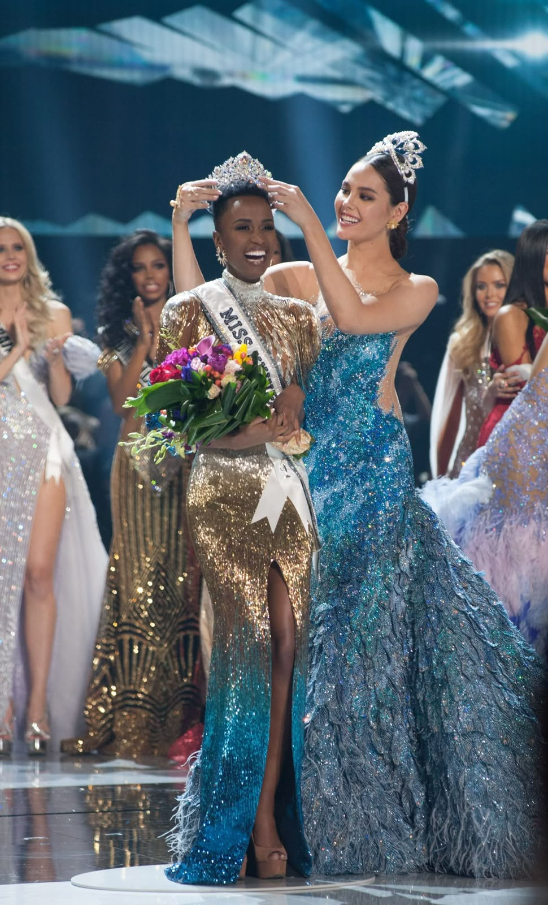

Our Programmes
Discover the initiatives through which we empower young women in Soweto and across Gauteng.

Annual Empowerment Pageant
Our flagship event brings together young women from across Gauteng to compete in a pageant that celebrates confidence, community leadership, and personal growth — not just appearance. Contestants complete a structured development programme in the months leading up to the event.

Mentorship Workshops
Ongoing workshops covering leadership skills, public speaking, financial literacy, and career readiness. Workshops are facilitated by professional mentors and past programme graduates who understand the challenges our participants face.

Educational Scholarships
Through corporate sponsorships and community fundraising, we provide tuition, textbook, and accommodation support to selected participants pursuing tertiary education. Scholarships are awarded annually based on need and merit.

Community Outreach
Beyond the pageant and mentorship programmes, we run regular outreach initiatives in partnership with local schools and shelters, including donation drives, career talks, and youth wellness days.